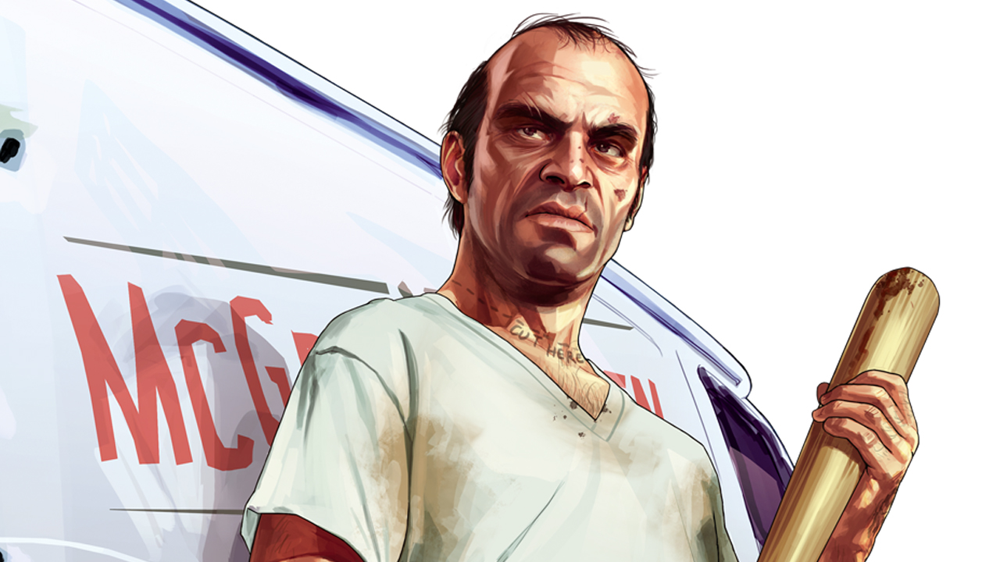

Trevor(){
Games

Com certeza o mais maluco e insano do jogo. Não existe leis, llimites ou regras que o faça parar, Trevor é um personagem psicótico que não merece a mínima confiança, alguém que dificilmente controla os seus impulsos e emoções, conduzindo a sua vida através dos seus desejos e da droga. Trabalhou como piloto militar e foi assaltante de bancos ao lado de Michael. Violento, extremo, impetuoso, vingativo, psicótico, desequilibrado, imprevisível, indomável e infame, durante as missões, a parte pesada sempre ficará pra ele, seja torturando alguém para extrair informações ou assassinando uma pessoa.
Habilidade especial: Ao ativar sua habilidade, ele praticamente se torna uma máquina de matar, entrando em uma fúria incontrolável, Trevor causará mais dano com armas e combate corpo-a-corpo e receberá menos dano dos inimigos.
Trevor com certeza foi o personagem que mais me trouxe diversão no jogo. Simples, prático, efetivo, muita ação e pouca conversa é assim que as coisas funcionam com ele. Você fará as coisas mais loucas possíveis, poderá comprar um hangar e ter tanques de guerra, aviões ou helicópteros, poderá trabalhar com seu próprio tráfico de drogas ou armas, fazer missões secudárias de matança ou caçar animais. Com ele você poderá comprar boates, hangares, local de desmanche de carro. Procura por diversão, muito sangue, missões malucas e uma jogabilidade única? Então com certeza seu personagem preferido será o Trevor.
Referências:
}